Simple, clear, and attentive photography from Tartu to the rest of Estonia.
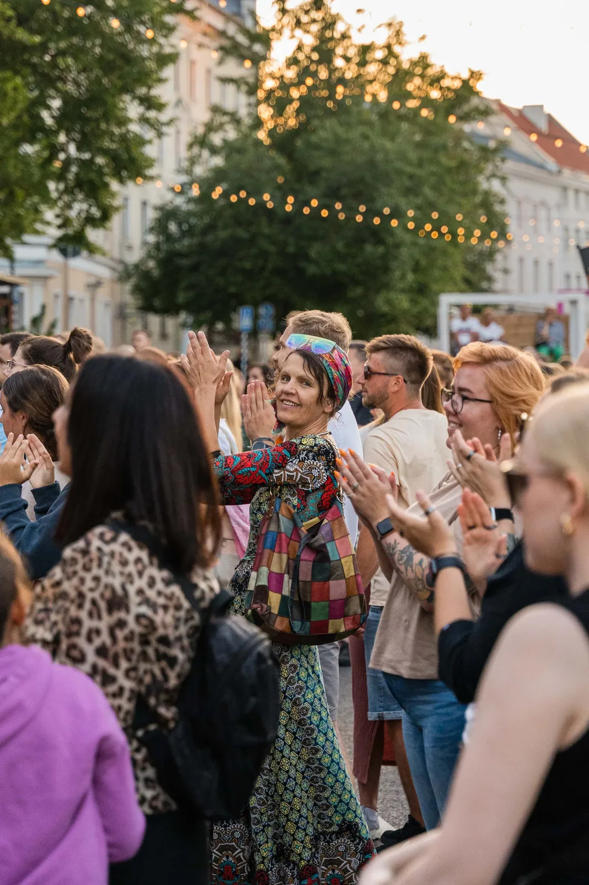
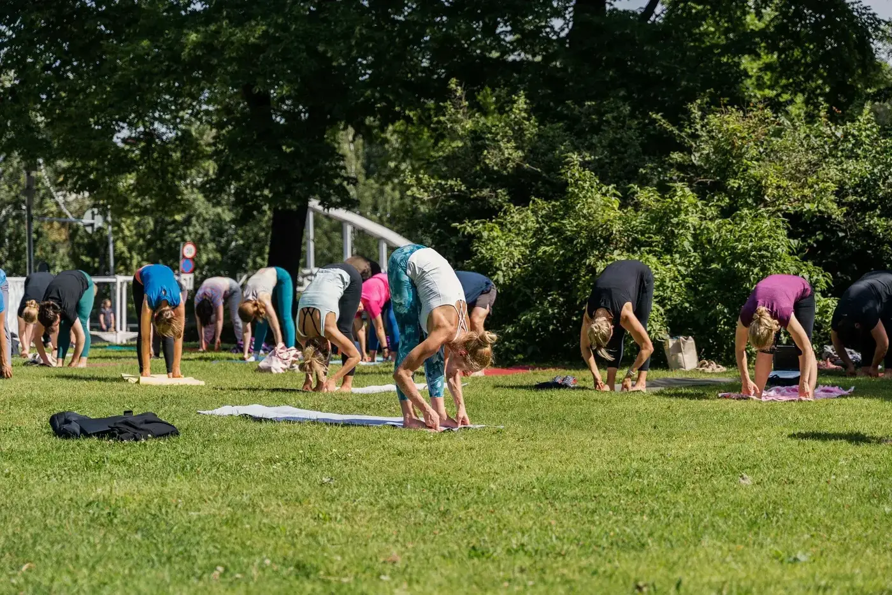
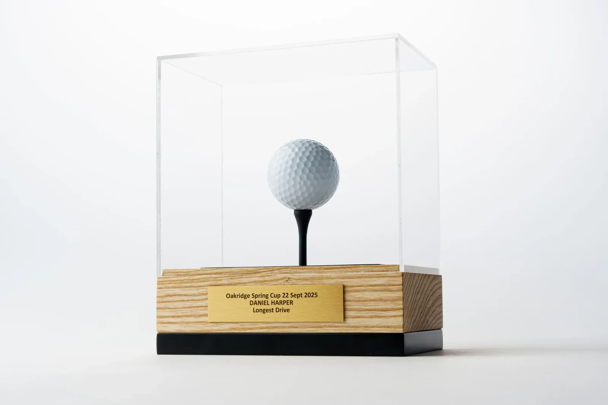
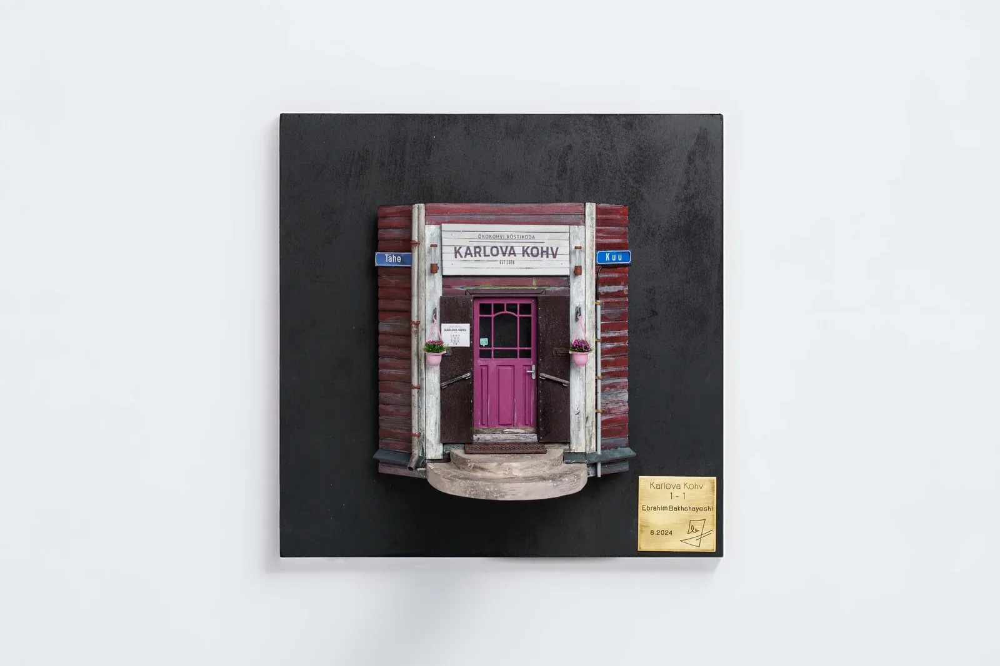
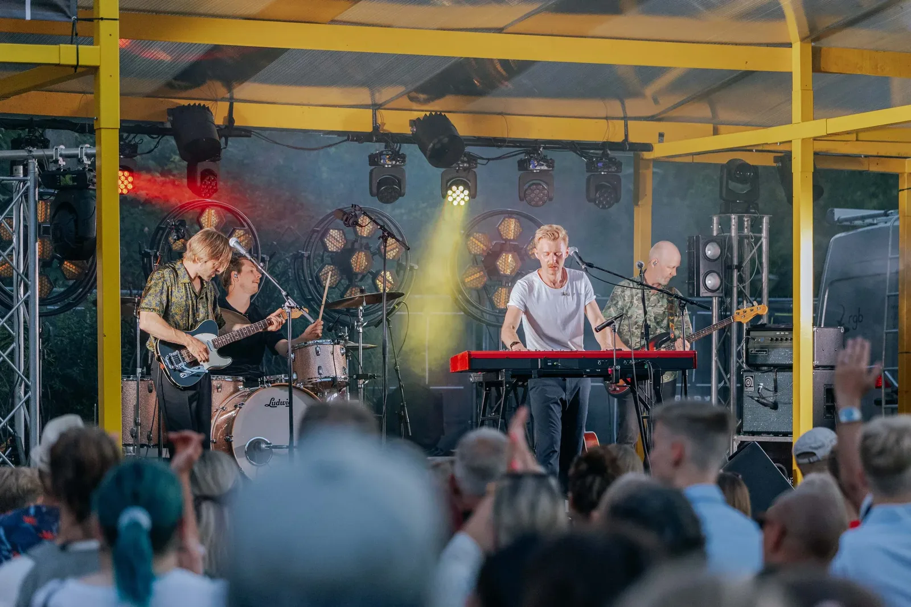
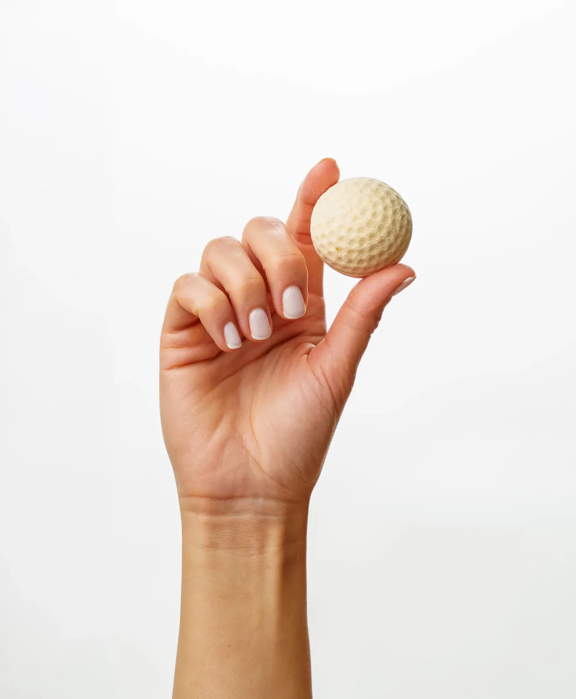
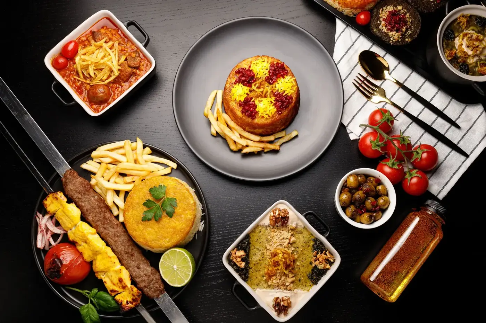
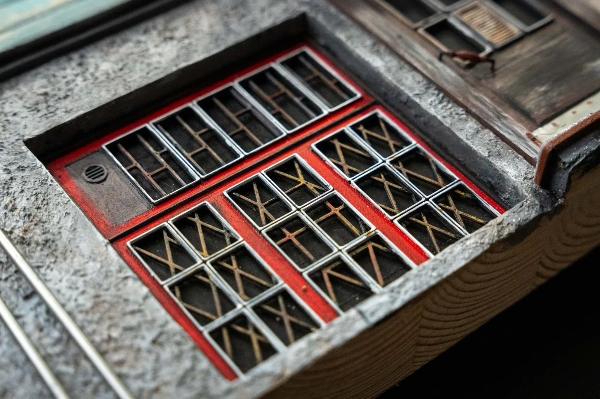
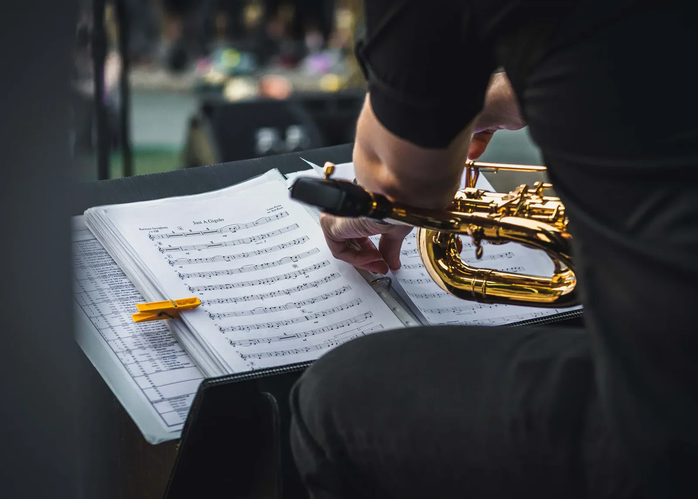
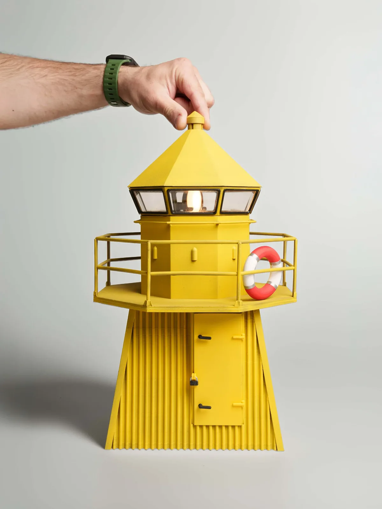
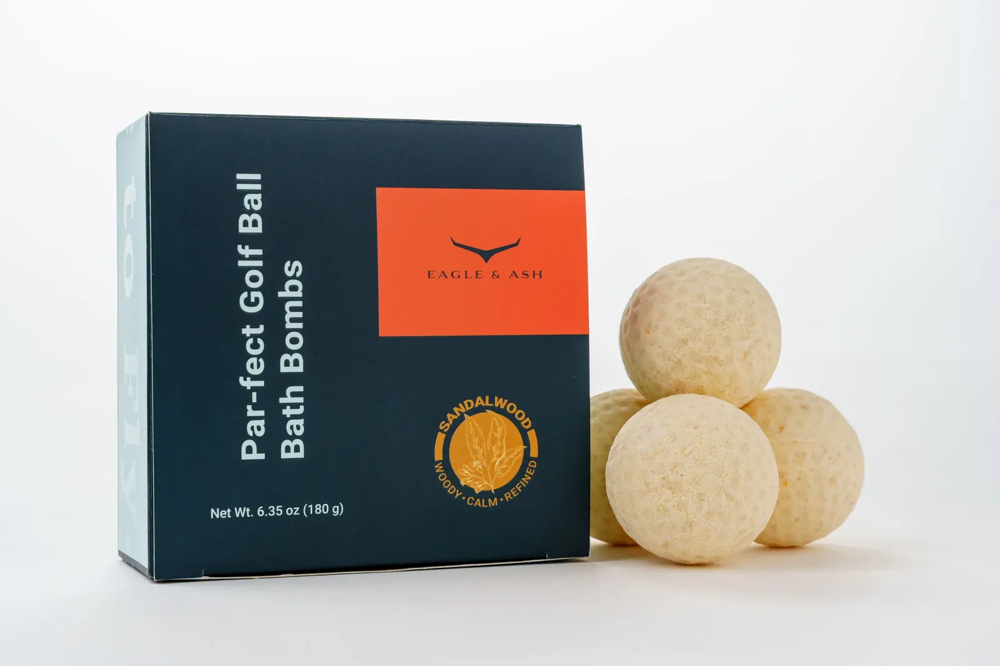
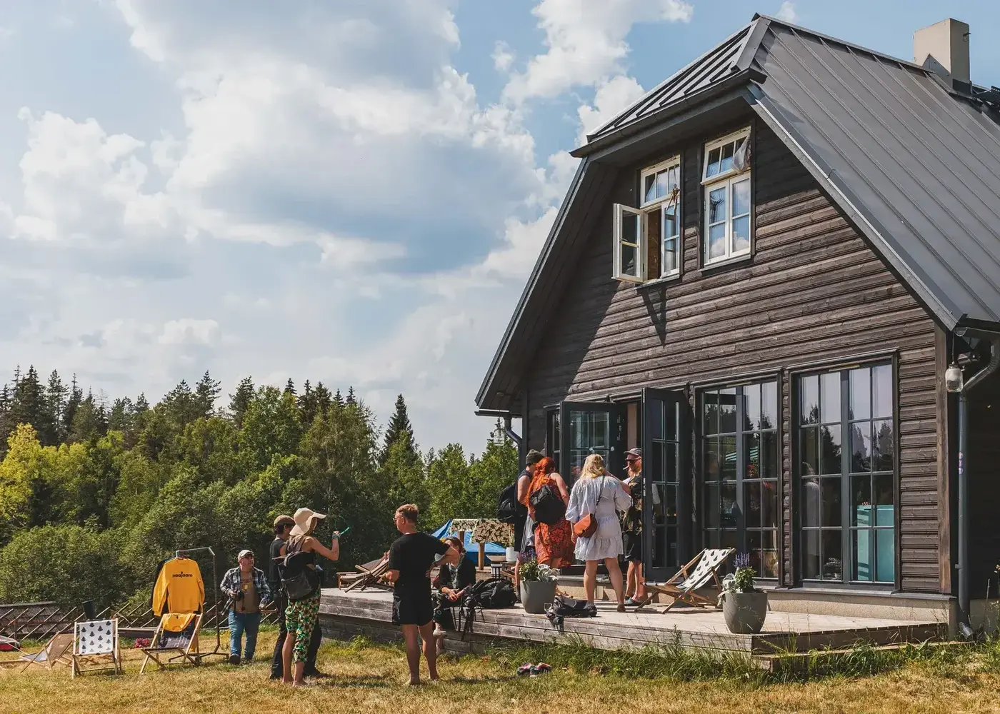
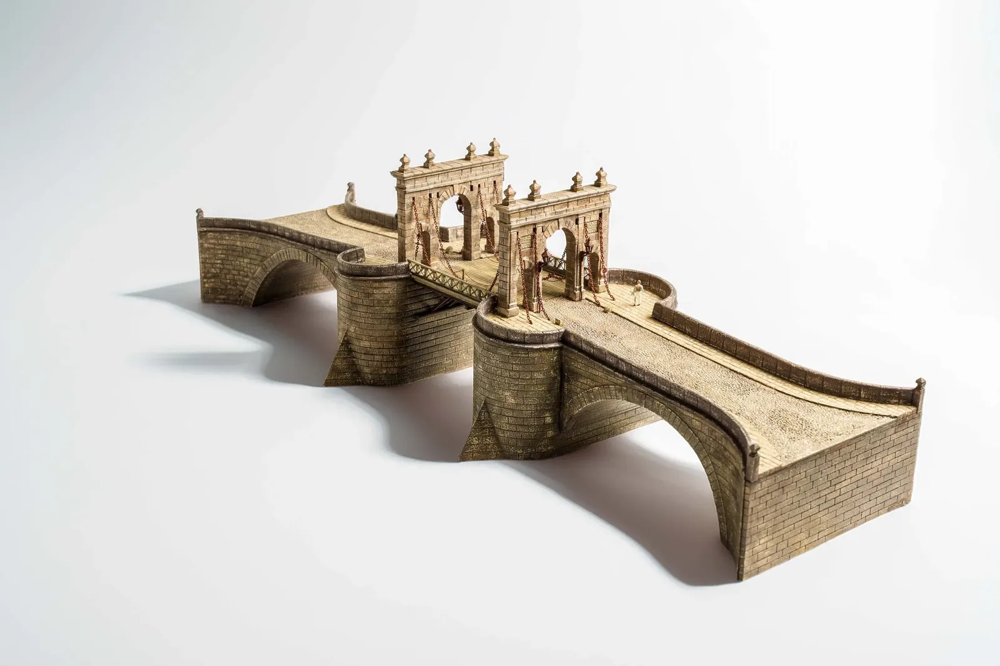
Trusted by
A few of the brands and organisations I’ve photographed for.
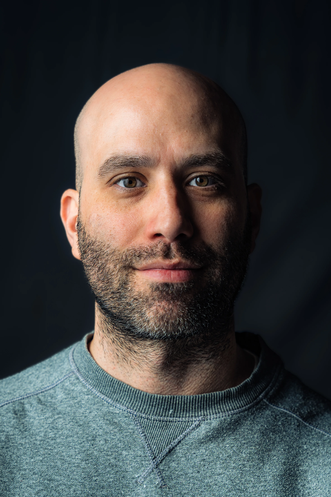
I’m Nima Sarabi, a photographer based in Tartu and working across Estonia. I focus on event, product, and food photography, delivering clear, direct images that help clients show their work at its best.
My approach is straightforward. I work quietly, stay focused, and pay attention to the details that matter.
I come from a design and model-making background, where accuracy and clarity matter. That work trains you to notice the small things, and I bring the same discipline into my photography. Clean composition, controlled light, and honest documentation.